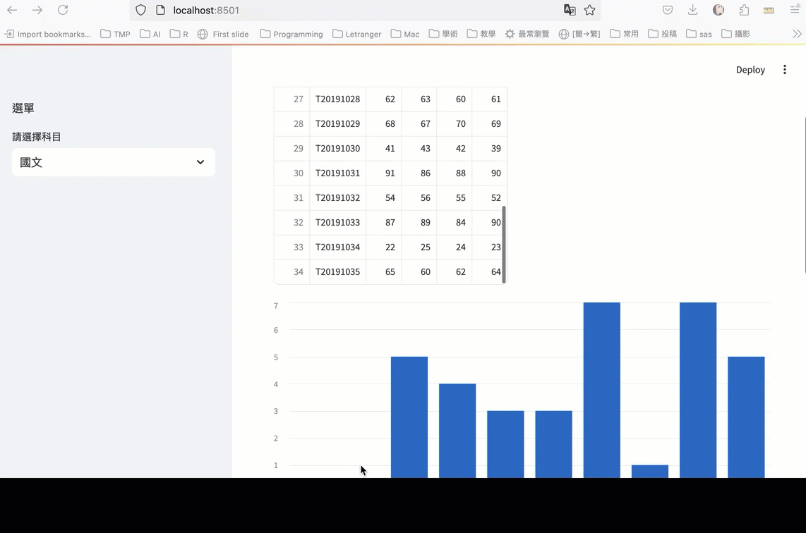

202408096Python專題式程式設計教學探究
Table of Contents

1. 研習內容
- 研習講義: 待補
- 研習對象: 有程式設計經驗，想快速入門Python程式設計的教師（非科技領域專長）
- 研習時間:113年12月13日（星期五）9:00-16:00
- 研習地點:雲林縣立虎尾國中
1.1. 課表
| 時間 | 活動內容 | 主持人／主講人 | 助教 | 備註 |
|---|---|---|---|---|
| 9:00-9:10 | 報到、長官致詞 | |||
| 9:10-10:00 | Colab, Python與AI | 台南一中顏永進老師 | 待聘 | |
| 10:00-10:10 | 休息 | |||
| 10:10-12:00 | Python基礎語法 | 台南一中顏永進老師 | 待聘 | |
| 12:00-13:00 | 午膳休息 | |||
| 13:00-14:30 | 資料分析與視覺化 | 台南一中顏永進老師 | 待聘 | |
| 14:30-14:40 | 休息 | |||
| 14:40-16:00 | Python的UI設計 | 台南一中顏永進老師 | 待聘 | |
| 16:00-16:10 | 綜合座談 |
1.2. Google Classroom
- 課程代碼: 4uvdyhf
2. 課程目標
- 熟悉Colab
- 利用AI協助開發Python專案
- 熟悉Python基本語法
- 體驗Python的資料分析與視覺化
- 體驗Python的AI分群功能
- 體驗Python的人機界面套件: Streamlit
3. 預期成果

Figure 1: Streamlit+Python